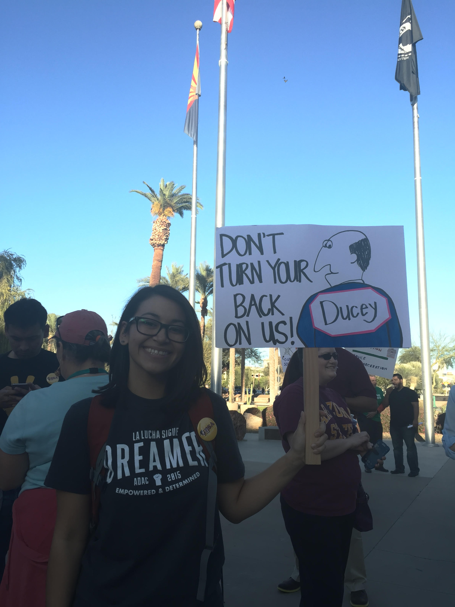

An immigrant journalist who began his career in 1997, writing for the newspaper La Prensa, in his native San Luis Rio Colorado, Sonora. Before joining the team of Mixed Voices, Murillo worked two years with Prensa Hispana and nine years for La Voz Arizona.Murillo is a graduate of the Hispanic Leadership Institute (HLI) and he had received the "40 Hispanic Leaders Under 40" award in 2013. Murillo had studies in Communication by Instituto Cecades in Sonora and the Universidad Autonoma de Baja California (UABC).
Originally from Los Angeles, Maggie is a PhD student in the English department at the University of Arizona. Her research focuses on prosumer cultures and rhetorics with a specific focus on social movements such as civic hacking. She is the community organizer for the local Code for America brigade in Tucson and is a self-proclaimed hackathon enthusiast--especially when they are aimed towards creating social good.
Journalist graduated from the Universidad Autonoma de Cali, Colombia. She has 10 years of experience covering issues related to immigration and the border. Paula worked for six years as a reporter for the Spanish-language newspaper Hoy Los Angeles Times and as a video journalist for Telemundo Arizona for two years. She’s currently in Arizona as a freelance correspondent for EFE News Agency, El Diario de Hoy El Salvador Newspaper and television media in the United States.
A nontraditional student in his final undergraduate year of Computer Science at the University of Arizona. Out of high school, he went to Northern Arizona University. After having gone there for three years and not finding an area of interest, he became a commercial truck driver. After two years of that, he found the motivation to make it back to the university for a better future.
A multimedia journalist from Phoenix, Pita has worked in radio since she was 18 years old and is passionate about people. She an ASU Cronkite graduate and has been a journalist with local radio stations and for online news media. Sports, news and entertainment are topics she covers. She is currently a syndicated weekend host for and a reporter for the Spanish-language community website Mixed Voces.
A graduate of Emerson college who has recently transplanted to the state of Arizona where she joined LA VOZ (Gannet) as a general reporter covering AZ politics and arts and public safety. Laura is a bilingual journalist who aspires to continue the compelling story of community.
We learned so much about data! Visualization, scrapping, collection, animation, and research to name a few.
http://www.pewhispanic.org/2009/04/14/iv-social-and-economic-characteristics/
https://bigfuture.collegeboard.org/get-started/for-undocumented-students/students-speak-undocumented-and-applying-to-college
https://nces.ed.gov/programs/digest/d13/tables/dt13_302.30.asp
http://www.census.gov/population/intmigration/
http://www.lawlogix.com/resource/timeline-major-daca-milestones
www.CollegeCalc.org
Student: Gerald Wildmoser
Eye: Travis Yunis
Arizona: Ted Grajada
Money bag: Luis Prado
Family: Wilson Joseph
Shoes: Vinkyntas
Watch: Gonzalo Bravo
Arizona Dream Act Coalition
Sofia Benitez
Celeste Bustamante
Jens Manuel Krogstad
David Eads
Wilson Liévano
Phuong Ly
Claudia Núñez
Lucio Villa
Sofia Benitez graduated from ASU with a degree in physics.
____
For Sofia Benitez, an undocumented student living in Arizona, education has been more than a step to a better life.
“I’ve always felt that education was the driving force for me, especially as an undocumented immigrant I really needed motivation to get past the obstacles”. Sofia is a dreamer. Sofia is a fighter. Sofia is an STEM graduate, with a degree in physics. She graduated in 2012 and is taking one master level class per semester, because she can’t afford to enroll in the full-time program.
In contrast with the 39 percent of students in public universities who receive federal grants to fund their education, dreamers like Sofia are ineligible for financial aid programs. In Arizona, they are also ineligible for instate rates even though there’s no other state they can call home. Not only are they battling to have access to affordable higher education, but getting driver’s licences and having their families shielded from deportation is also a pressing issue.
“I feel like I came to this country for the freedom and yet I feel trapped”, she said over the phone as she trailed around Madera Canyon in Tucson, in awe of the foliage, the birds, and the immensity of nature.
Sofia “came out” as undocumented two weeks. Her story is important, and she wants to fight for education equity in Arizona so other undocumented students on putting their future in their education can have hope.
___
Para Sofia Benitez, estudiante indocumentada de Arizona, la educación es más que una herramienta para un mejor futuro.
“Siempre he sentido que la educación es una herramienta que me impulsa y me motiva para sobrellevar los obstáculos, especialmente siendo indocumentada”, dijo. Sofía es una soñadora. Sofía es una luchadora. Sofía se graduó con un título en física en el 2012 y ahora toma una clase de maestria por semestre, ya que no puede pagar por participar en el programa a tiempo completo. A diferencia del 39 por ciento de los estudiantes en el país que reciben subsidios federales, los dreamers no califican para programas de ayuda financiera. Y en Arizona, se les niega matrícula como residentes del estado, a pesar de que no hay ningún otro lugar que consideren su hogar.
En este estado se puede decir que los dreamers han luchado, y siguen en la batalla, por licencias de conducir, acceso a colegiaturas como residentes y por protecciones de deportación para sus familiares.
“Siento que llegue a este país por la libertad y aún así me siento atrapada”, dijo Sofía en una entrevista telefónica, mientras paseaba por el parque natural Madera Canyon en Tucson, Arizona. Contó que le impresiona la naturaleza, los pájaros y la inmensidad del paisaje. Lo que dice le da fuerzas para seguir en la lucha por acceso a una educación superior.
Recientemente, salió de las sombras para declarar abiertamente y sin el temor natural de los inmigrantes, que es indocumentada. La historia de Sofía es el reflejo de miles de estudiantes indocumentados que como ella tratan de mantener las esperanzas vivas para continuar el camino de la vida a través de triunfos en la educación.
___
“I’ve always felt that education was the driving force for me, especially as an undocumented immigrant I really needed motivation to get past the obstacles. It would be . they don’t have hope. graduate in may 2012 -- tried to take one physics graduate class. I want to go to graduate school, but most grad students work at the school and that’s how they . tried to make that commitment. I feel like i came to this country for the freedom and yet i feel trapped. any little chance i get to know this state more -- being out in nature reminds me that all the other problems that people put on you don’t matter. Green Valley to Madera Canyon-- so many birds, it’s great. foliage everywhere there’s so many birds. -- makes me feel like to -- 2 weeks ago, less than ago.